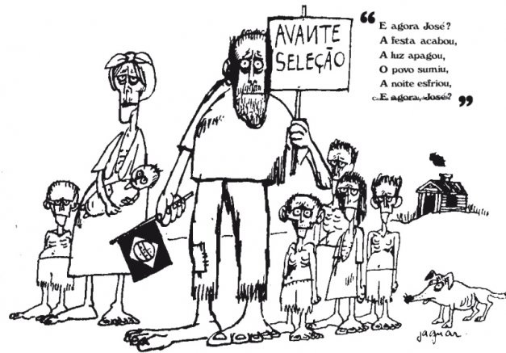
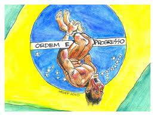
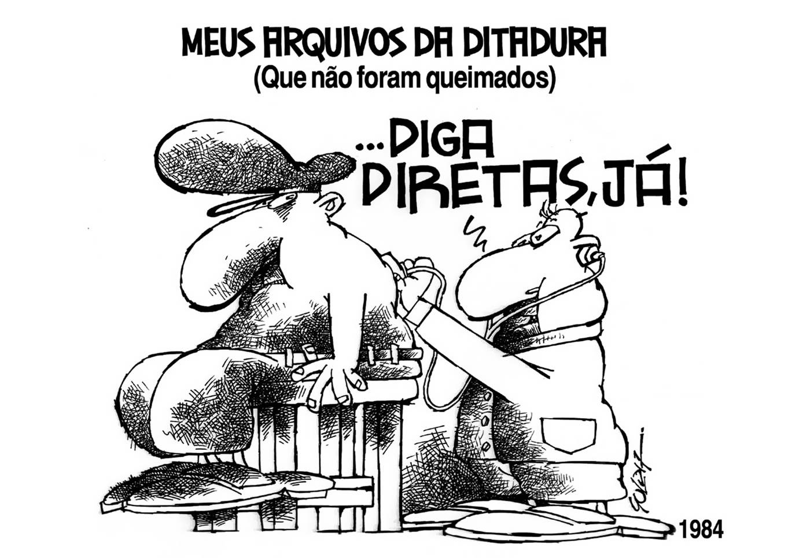

3. A Ditadura Militar passa a governar através de um conjunto de normas baixadas pelo governo, que se sobrepunham até mesmo à constituição federal. Que nome recebe este conjunto de normas? Qual destas normas foi a mais dura?
4. Complete:
"A política econômica adotada no início dos anos 70 pelo então ministro do planejamento Delfim Neto, tornou-se conhecida como "". Essa política afirmava que a riqueza era comparável a um "bolo" e, enquanto tal precisava primeiro crescer para depois ser dividida."
5. Em 1970, o Brasil se consagrou tricampeão mundial de futebol. Era um momento de grande euforia! Falava-se de um Brasil Grandioso e distribuíam-se adesivos com a inscrição "Brasil, ame-o ou deixe-o". Cantava-se:
|
Somos milhões em ação
Pra frente Brasil, no meu coração
Todos juntos, vamos pra frente Brasil
Salve a seleção!!!
De repente é aquela corrente pra frente,
parece que todo o Brasil deu a mão!
|

|
a) Relacione slogans como "Todos juntos, vamos pra frente Brasil" com a charge e o chamado "milagre econômico".
b) Relacione o slogan "Ame-o ou deixe-o" com a repressão do regime militar instaurado em 1964.
6. A charge abaixo representa que prática da Ditadura Militar? Cite pelo menos dois nomes de pessoas que sofreram com esta pratica:

7. Os trechos abaixo são de uma música que se tornou ícone de um importante movimento de redemocratização:
(...) meu Brasil,
Que sonha com a volta do irmão do Henfil,
com tanta gente que partiu num rabo de foguete:
chora a nossa pátria-mãe gentil
choram Marias e clareasses no solo do Brasil.
Mas sei, que uma dor assim pungente
não há de ser inutilmente a esperança
dança na corda bamba de sombrinha
e em cada passo dessa linha pode se machucar.
(João Bosco e Aldir Blanc, "O bêbado e a equilibrista")
a) Que movimento é este?
|

|
b) A Ditadura Militar chegou ao seu fim diante da maior mobilização popular já ocorrida na história do país. Como se chamou este movimento e o que você sabe sobre ele?
|
8. No decorrer da história, futebol e política sempre se encontraram. (…) No Brasil, o momento mais significativo da ditadura, em que futebol e política andaram lado a lado, coincidiu com o tricampeonato mundial da Seleção Brasileira, no México em 1970. O governo do general Emílio Garrastazu Médici fez de tudo para associar a vitória de Pelé e de seus companheiros, na Copa, com a boa fase econômica do país e o furor patriótico que os militares tanto prezavam e incentivavam na população.
(Revista Carta Fundamental, junho/julho de 2010. Adaptado)